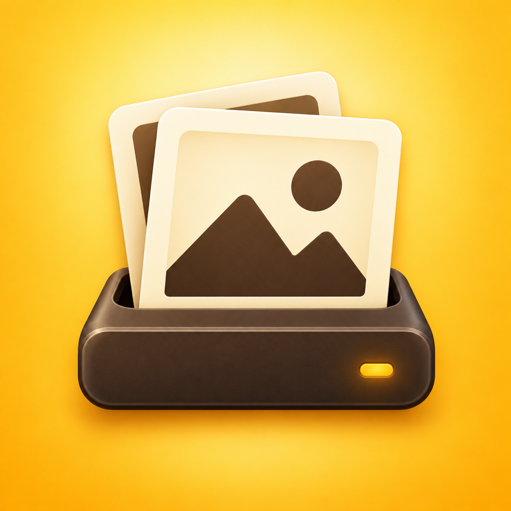

Choose what to protect
Connect your photo library and add any Files folders you want included.

ArchiveMark✓ Official support
ArchiveMark helps you copy original photos, videos, and chosen files to storage you control—then clearly shows what is protected and what still needs attention.
For the fastest help, include your device model, OS version, and ArchiveMark version. Never attach personal media.
What to expect
Connect your photo library and add any Files folders you want included.
ArchiveMark compares your library with your archive before enabling backup.
Each copied file is verified. Integrity Check can find and repair damaged copies.
Review recent backups and receive reminders when new media is waiting.
Quick start
ArchiveMark performs a one-way backup. It never deletes originals from your phone or tablet.
Allow access to the photos and videos you want ArchiveMark to see.
Select an external drive or a folder in device storage.
ArchiveMark shows the items waiting, copies them, and verifies every completed file.
Refresh the library later to find new items. Verified files are not copied again.
Common questions
Reconnect the saved drive or folder, then refresh the library. ArchiveMark keeps backup disabled while the destination is unavailable.
ArchiveMark can rebuild verified records from its local catalogue when the destination files still match. Your media files remain the source of truth.
On iPhone, a Live Photo contains an image and a short video. ArchiveMark counts one library item but verifies both original files.
It reads backed-up files, confirms their contents, and recreates missing or damaged copies when the original is available.
ArchiveMark uses the background time available on your device. For very large backups, keep the app open and the device powered; reopening safely reconciles completed files.
Privacy
ArchiveMark does not require an account and does not upload your media to an ArchiveMark cloud service.
Access is used to show backup status and read originals selected for backup.
ArchiveMark accesses only the source folders and destination you choose.
Verification records are kept on your device and inside the selected archive destination.
Optional reminders tell you when new media may be waiting for backup.
Privacy information last updated September 20, 2026.